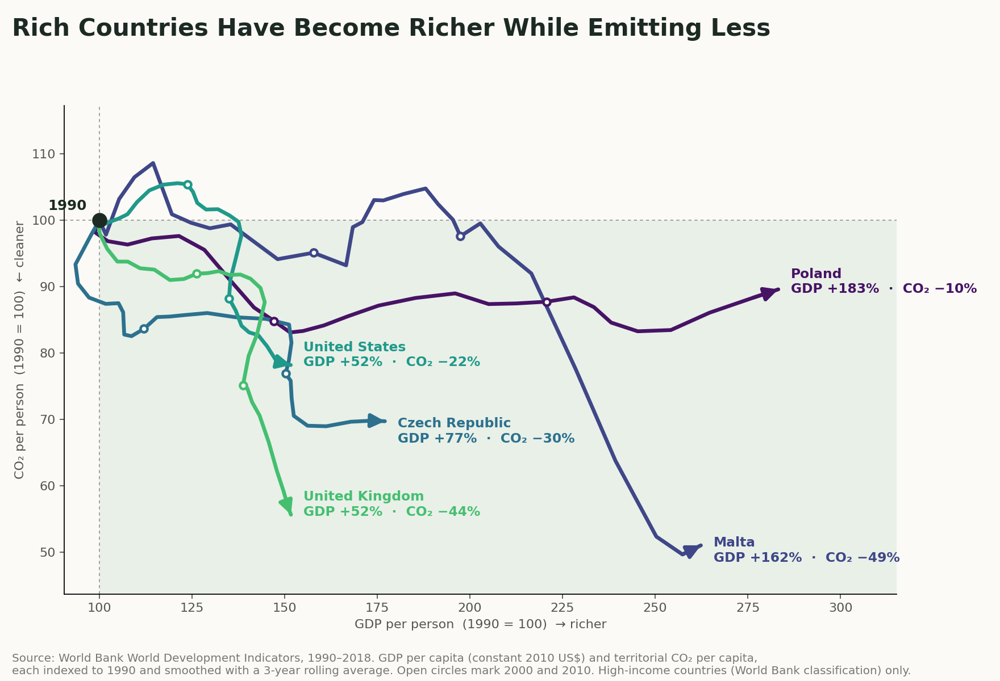
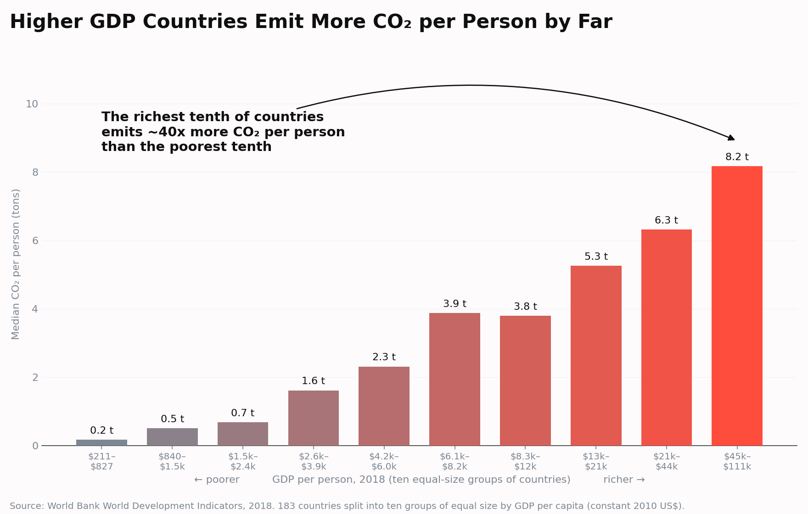

Proposition: Rich countries have separated economic growth from carbon emissions.
FOR the Proposition

Design Decisions and Rationale:
- -1 Hand-picked countries with 1990 as a reference point. The visualization hand picks countries that exhibit success stories in recent history, and notably are labeled high-income by the World Bank. The index on the left axis is set to 100 in 1990, for both carbon and dollars, so that the reader can quickly see the effect of rising GDP and falling emissions. The choice of 1990 is not arbitrary, as it is the baseline year used by the Kyoto Protocol. It is worth noting that the choice of countries and reference year is a form of cherry-picking, which could either be an honest exhibition of countries that represent proof of progress or a misleading selection of data. Here I believe it is likely a deceptive choice, as the audience may be led to believe that these countries are representative of all rich countries, when in fact they are not. Alternatives considered: random sample of countries, additional hand-picked countries, different start year.
- -1 Clipped axes, messy trend lines, and 3-year rolling averages. The x-axis and y-axis are both clipped to the range of the data, which makes the lines look more dramatic than they would if the axes were extended to 0. The trend lines are also messy, with some lines crossing over each other or even moving backwards (in years when GDP fell or emissions rose). The lines are also smoothed with a 3-year rolling average, which is a reasonable choice to reduce noise, but it also makes the lines smoother than they would be if the raw data were plotted. These choices are likely to be misleading, as they exaggerate the effect of rising GDP and falling emissions. Alternatives considered: extended axes, raw data plotting, different smoothing techniques.
- -1 Title framing The title says "Rich Countries" even though only hand-picked countries are shown, which invites the reader to generalize. The axis labels and the shaded quadrant tell the reader how to interpret the chart before they look at the numbers, and the arrowheads reinforce the idea that this trend will continue. Alternatives considered: more neutral title, no quadrant shading, no arrowheads.
- -0.5 Lighter colors The background is a light cream and the lines use blues and greens from the viridis palette, an established, colorblind-safe colormap, so the chart feels hopeful rather than alarming. This is a subtle choice, but it makes the chart feel more persuasive of the hopeful proposition that emissions and GDP can be separated. Alternatives considered: variety of color palettes, including more reds and oranges.
AGAINST the Proposition

Design Decisions and Rationale:
- -1.5 Answering a time question with a static snapshot. Separation of emissions and GDP could be interpreted as a change over time within countries, but our chart is a cross-country comparison for a single year. It shows that richer countries emit more per person in 2018, but ignores any temporal dynamics within countries. The reason for this is to use the point in time relationship as it is easy to interpret and to avoid the complexity of showing a time series for every country. Alternatives considered: time series for selected countries or animation over time.
- -0.5 Grouping countries by income and showing the median. Instead of plotting each country, I split all countries into ten equal-size groups by GDP per person and show each group's median emissions. This is a clean visual that is easy to read. But it also hides the variation inside each group as low emitting countries, like Sweden, are grouped with high emitting countries. Alternatives considered: plotting each country, showing the mean instead of the median, showing the range of emissions within each group.
- -1 Grey to red gradient and title The bars shift from grey to red as income rises, tying wealth to danger visually before the reader reads any text. The annotation tells the reader what to think, and the title "Higher GDP Countries Emit More" frames this as a direct consequence of wealth. Both are accurate, but they invite the reader to treat getting richer as the cause rather than possibly just a correlation. Alternatives considered: more neutral color palette, more neutral title.
- +1 Linear axis starting at zero. The y-axis is linear and starts at zero, which is the conventional, honest choice for a bar chart. This is an earnest design choice that doesn't omit any data and allows the reader to see the true magnitude of the differences between groups. Alternatives considered: logarithmic axis, starting the axis at a higher value.
Final Reflection
What surprised me most was how little I needed to manipulate the data to make a persuasive argument. While I did make some transformations to strengthen the story I wanted to tell, the data itself was already persuasive of both perspectives. I believe the implication is that two opposing arguments can organically arise from the same dataset, and that the ethical burden of a designer is to consider the truthfulness of the argument they are making, not just the techniques they use to make it. And along those lines, it is very easy for designers to accidentally mislead their audience, even when they are trying to be honest.
The true difficulty of this assignment was finding ways to make the two visualizations simple and acceptable for the audience. Finding the blurry line between persuasive and misleading was a challenge, and I found myself questioning if the choices I made were ethical or not. Especially for the "for" visualization, I struggle to discern if limiting the data to 1990 and picking the countries I did was a fair exhibition of progress or a misleading cherry-pick. I also struggled with the "against" visualization, as I wanted to show how the most recent data shows that richer countries clearly emit more per capita, but it ignores progress over time. So I found myself in a position where I was trying to make the two persuasive visualizations as fair and honest as possible, but I was still left with a nagging feeling that I was misleading the audience in some way.
I don't truly have a solution to this problem other than to avoid the clearly misleading techniques (manipulating data directly, or using misleading visual encodings), and to try to be as honest as possible with the data I have. If a claim for the data is inherently vague (such as separating growth from emissions), then I think it is the responsibility of the designer to make that clear to the audience, and to show both sides of the data if possible. I'd define a choice as misleading when the conclusion would change if the reader saw the obvious alternative (another start year, all countries) and the designer hid that alternative.